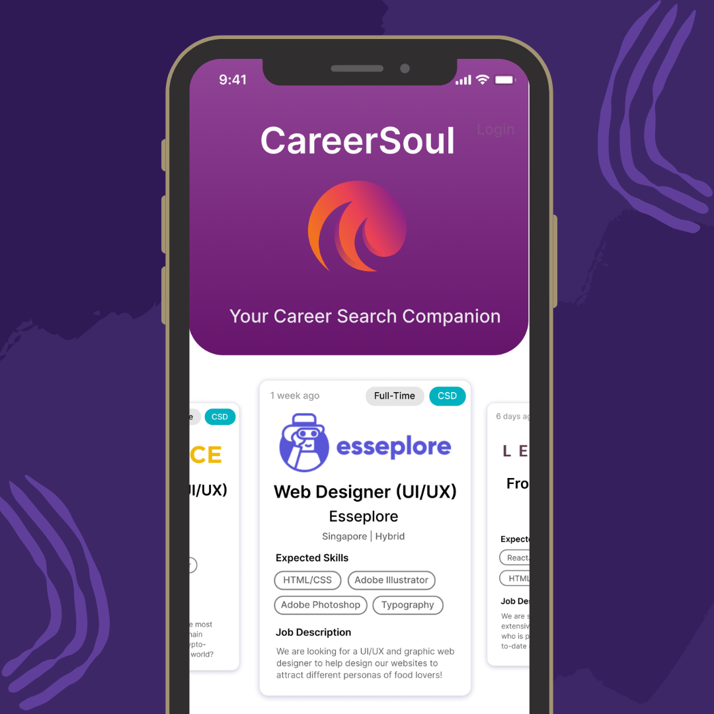

UX Designer & Digital Educator
Hi, I'm Deeni.
I design clear, human-centred digital experiences grounded in research, shaped by structure, and built to hold up under real use. My background spans product design, front-end development, and more recently, supporting students with additional learning needs in a school setting, which keeps me honest about designing for real people, not just personas.
Featured case study
View all work →
CareerSoul — Job Search App
A mobile app that eases the job-hunting process for university students. I led user and market research to frame the problem, prototyped from lo-fi (Excalidraw) to hi-fi (Figma), then validated the design with Think-Aloud interviews and the System Usability Scale.
More projects
A bit more about me
Design thinking, front-end craft, and these days — a classroom's worth of patience. Here's my experience, skills, and a few things I do outside of work.
Go to About →